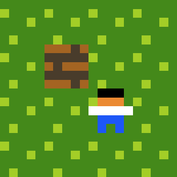

- Documentation
- New stuff in ps>xr
- runtime_border_twiddling
runtime_border_twiddling
What it does
The runtime_border_twiddling prelude flag enables a new rule command named border.
With this command, your game can expand or shrink the current level bounds while the game is running.

Example: level bounds changing at runtime with border commands.
How to enable it
- Add runtime_border_twiddling in the prelude.
- Use border at the end of rules.
title Border Demo
author You
runtime_border_twiddling
[ > Player | Grow ] -> [ > Player | ] border right 1
[ > Player | Trim ] -> [ > Player | ] border left -1
Command format
Use border <direction> <amount>.
- Directions: right, left, up, down
- Relative direction aliases also work: <, >, ^, v
- Positive amount expands in that direction
- Negative amount shrinks in that direction and removes anything outside the new bounds
When the resize happens
Border changes are applied after the current rule pass for the turn finishes, so all matching/replacement logic for that pass runs first.
Notes
- Without runtime_border_twiddling, the border command is disabled.
- If shrinking would remove too many cells, the level is clamped to a minimum size.
- This feature works with again loops, so bounds can change over multiple automatic turns.
 Puzzlescript Next
Puzzlescript Next